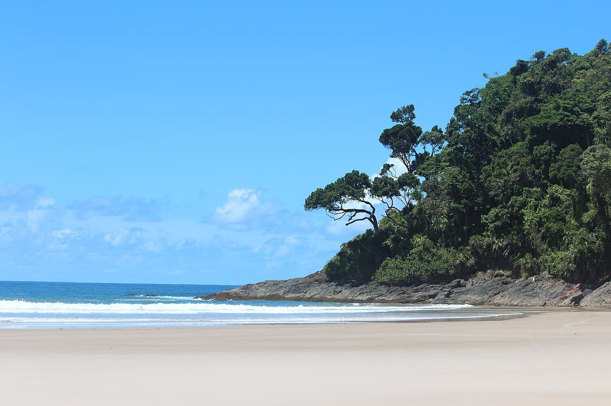

Itacaré
Brésil · surf

Plages tropicales bordées de forêt atlantique à Bahia, vagues douces idéales pour apprendre.
- Lieu
- Brésil
- Niveau
- Débutant
- Activités
- surf
- Type d'eau
- Mer / océan
- Coordonnées
- -14.28, -39.00 (position approximative du secteur)
Dangers à connaître
- Affluence.
- Quelques courants.
Le conseil d'Ocean Buddy
Cadre paradisiaque pour débuter dans une eau chaude.
Ouvrir dans Ocean Buddy Télécharger sur l'App Store
Source : Description historique Ocean Buddy · vérification externe en attente.